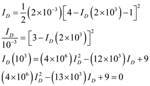
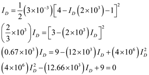
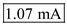
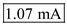
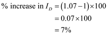
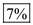
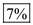

Refer to Figure 5.55(c) in the textbook.
Consider that the threshold voltage,  , and the process transconductance parameter, .
, and the process transconductance parameter, .
Calculate the bias current,  .
.
Substitute  for
for  , 4 V for the gate voltage,
, 4 V for the gate voltage,  ,
,  for the source resistance,
for the source resistance,  , and 1 V for
, and 1 V for  .
.

Solve the equation for  .
.
The value of results in , which is not acceptable.
Hence, the drain current,  is,
is,  .
.
Consider that the process transconductance parameter,  is increased 50% higher.
is increased 50% higher.

Substitute for , 4 V for the gate voltage,  ,
,  for the source resistance,
for the source resistance,  , and 1 V for
, and 1 V for  to calculate the bias current,
to calculate the bias current,  .
.

Solve the equation for  .
.
The value of results in which is not acceptable.
Hence, the drain current,  is, .
is, .
Find the percentage increase in  .
.

Hence, the percentage increase in  is, .
is, .